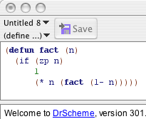

We will illustrate how to use our software via this short walkthrough. It assumes that you have already installed the Dracula software. If you have not, please refer to the installation instructions.
If you have installed the software, start up DrScheme and read on! Note that clicking on the small images below will open up a full-sized version in a new window.
The first step is to set your language level in DrScheme. Under the Language menu, select Choose Language.... A dialog will pop up. Under the heading Dracula, choose ACL2. The first image to the right shows the Choose Language... dialog; click on it to see a blown-up version.

(note: this image is already full-sized)
The editing area in the DrScheme window is split into two sections. The top is the Definitions Window, and that is where we edit programs. Type in the definition of the factorial function:
(defun fact (n)
(if (zp n)
1
(* n (fact (1- n)))))Run. You may now test your function interactively by typing expressions at the prompt in the bottom half of the DrScheme Window. Try evaluating (fact 10) at the prompt by typing in the expression followed by a return. DrScheme will print out the answer 3628800.
Try making an error in the interactions window. For example, try to evaluate (fact -4). This is an error because the predicate zp only works on natural numbers, and you'll notice that DrScheme prints an error message to that effect. It has also highlighted zp in the definitions window to indicate which call received the invalid arguments.
The Check Syntax button analyzes the code in the definitions window to detect syntactic errors. When the program is error-free, the code is colored to represent the binding-structure. Names whose definitions occur in the program are colored light blue. Names of primitives are colored purple, and unbound names are colored red.
Mousing over light blue names causes an arrow to be drawn from the binding occurrence to the bound occurrence. You can right-click (control-click on a Mac) to pop up a context menu that allows you to tack the arrows in place, to navigate through various occurrences of the name, and to change the name throughout the program (α-conversion).
ACL2's documentation is searchable via DrScheme's Help Desk. Highlight the predicate zp in either the definitions or interactions window, and then press F1. Follow the links to read the documentation on zp or use the text field to search for other documentation.
The right-hand side of the window shows the ACL2 console. The top half shows ACL2 proof trees, and the bottom half shows ACL2's output. The text here is read-only; ACL2 interaction will happen via the buttons in DrScheme. Begin by clicking the Start button. If this is your first time starting Dracula, you will be prompted to locate an ACL2 executable. Once you have located it, ACL2 will start up and you will see its output in the console.
Click Admit. This sends your definition of factorial to ACL2. ACL2 will attempt to prove that your function terminates on every input, and, if it can, your definition will be highlighted in green. If ACL2 rejects your definition, it will highlight it in red. If ACL2 rejects your code, edit it and try again. If the next unhighlighted expression is ill-formed, DrScheme will not send it to ACL2.
In order to keep ACL2 and DrScheme in sync, code that is highlighted green cannot be edited. If you wish to edit a green expression, then click Undo until the expression is unhighlighted. You may also click Reset to unhighlight all expressions in the definitions window.
The All button will send all expressions in the definitions window to ACL2. If one of them is rejected, DrScheme will highlight it red and not attempt to admit the remaining expressions.
The To Cursor button will either attempt admit terms up to the Definitions Window's cursor, or undo terms back to it, depending on where the cursor is. By placing your cursor in the middle of a term, you can alternate between admitting and undoing the term by clicking the To Cursor button repeatedly.
Now, prove that factorial always produces a positive number. Enter the following code after your definition of factorial:
(defthm fact-produces-positive
(posp (fact n)))
Admit to send the theorem to ACL2. The theorem should be highlighted in green. Now, look back at the console window. You'll see in the top it says Q.E.D. just below the theorem's name. To stop ACL2, click the Stop button. This will terminate the running ACL2 process for that window, and will clear the output and proof tree windows. If you wish to save ACL2's output before stopping, you may do so by clicking Save ACL2 Output As... from the Dracula menu.
Now that you have a handle on the basics of using ACL2 via DrScheme, study the Sample Code to explore more in-depth examples.